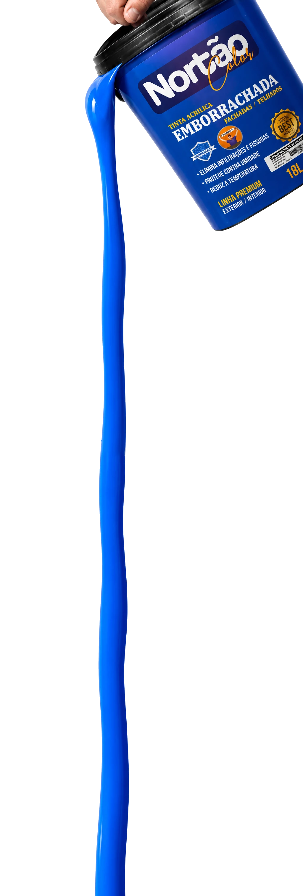
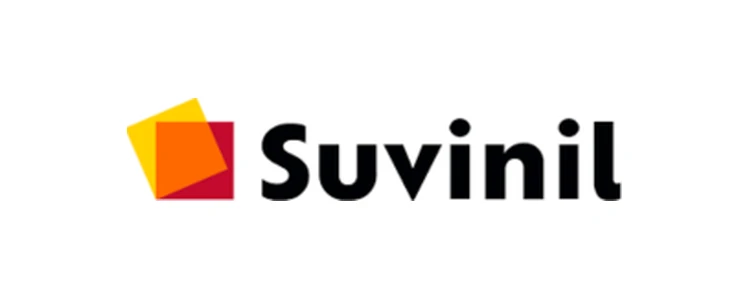
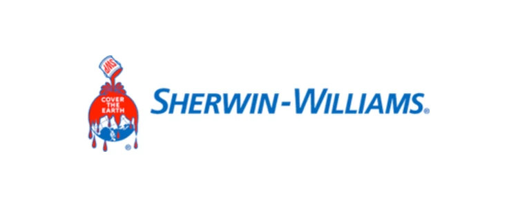
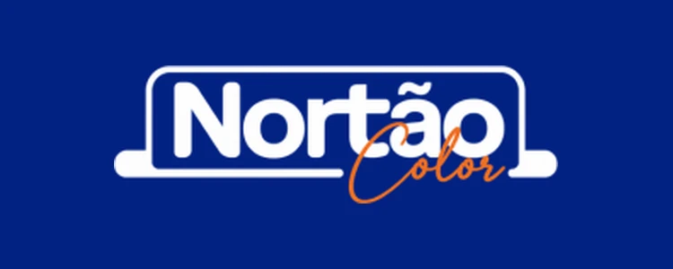
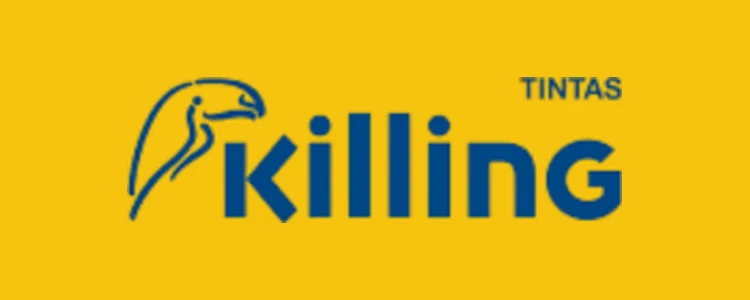
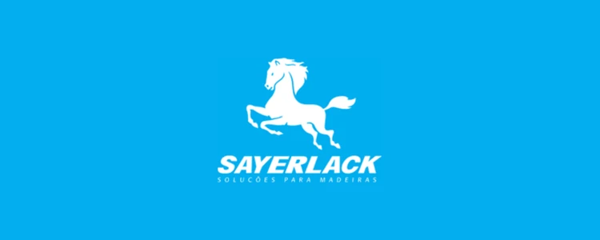
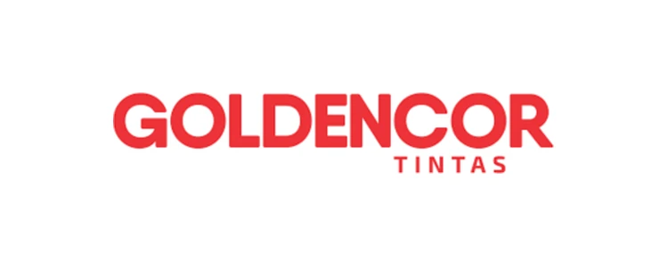
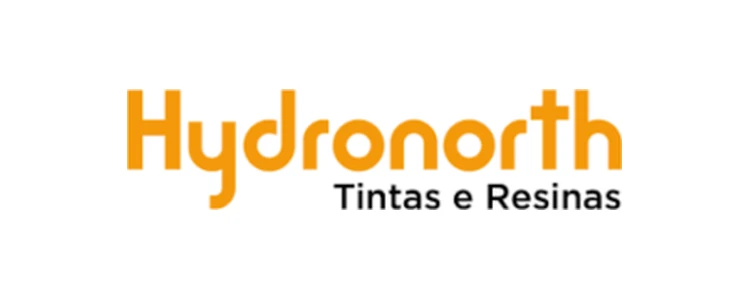
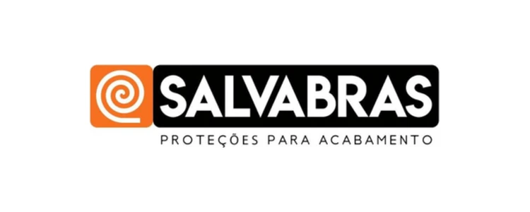
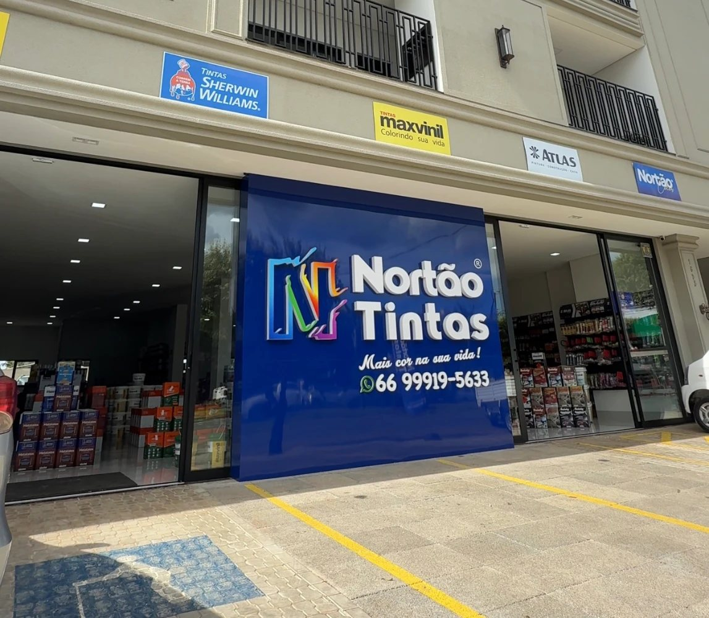

LOJA DE TINTAS EM SORRISO-MT
Descubra por que é
muito melhor comprar tinta
direto da fábrica.
A tinta ideal para sua obra, sem desperdício e sem retrabalho.
Falar no WhatsApp
★★★★★
+ de 7 anos de mercado
Atendendo reformas, obras e pintores da região

TRABALHAMOS COM AS MARCAS MAIS PEDIDAS DO MERCADO








CONHEÇA NOSSA LOJA
NORTÃO TINTAS - SORRISO
- EndereçoAv. Tancredo Neves, 1822 - Centro Norte, Sorriso - MT, 78890-000
- HorárioSeg a sex, 07:00–17:30 · Sáb, 07:00–12:00 · Dom, fechado
- Telefone(66) 99919-5633
